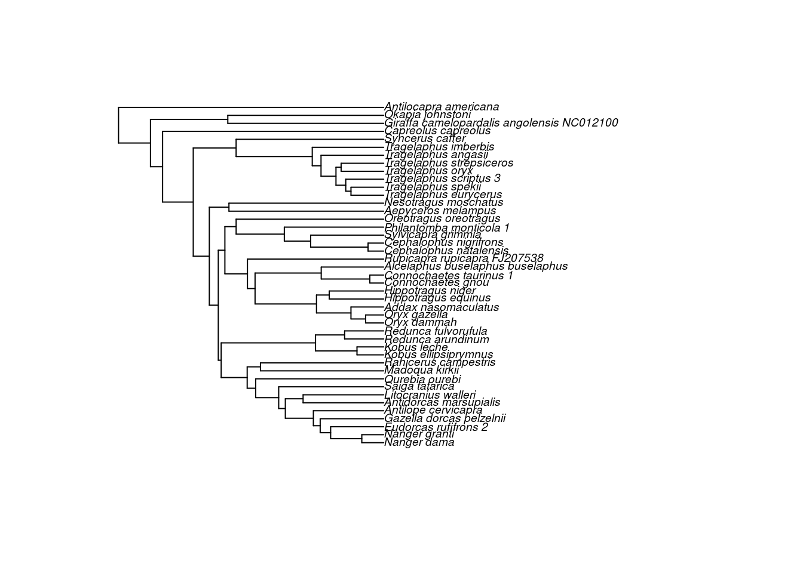
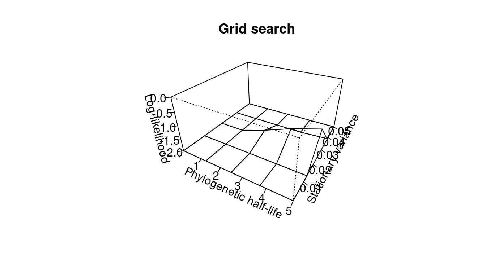
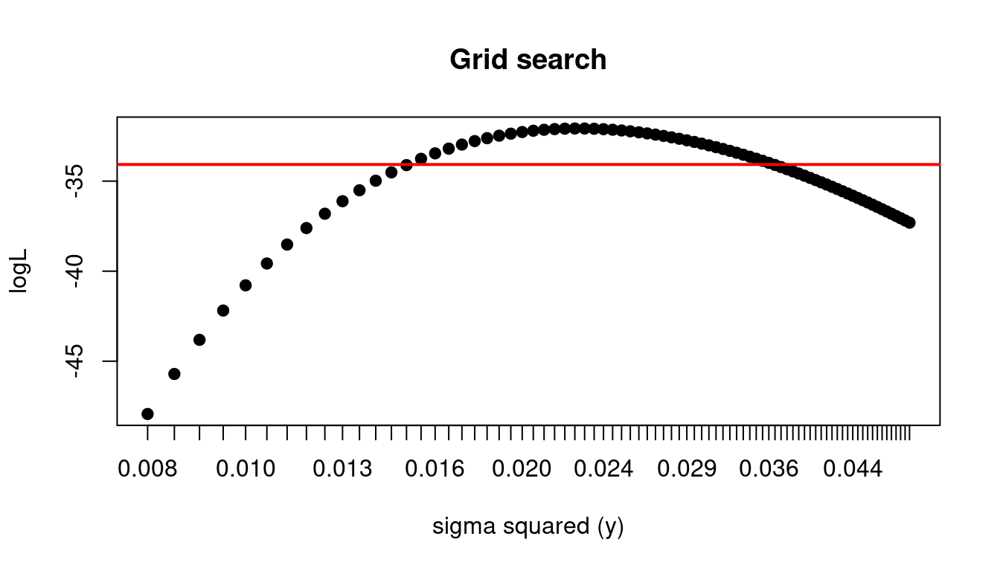
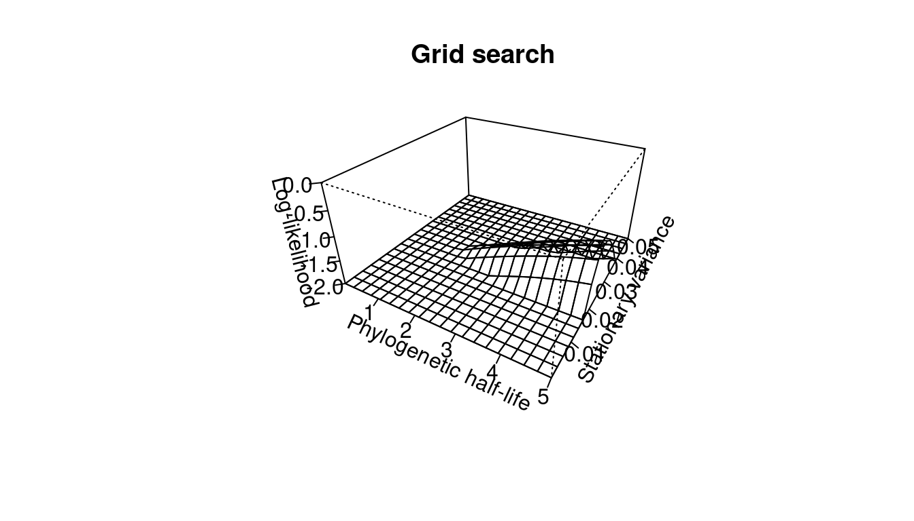
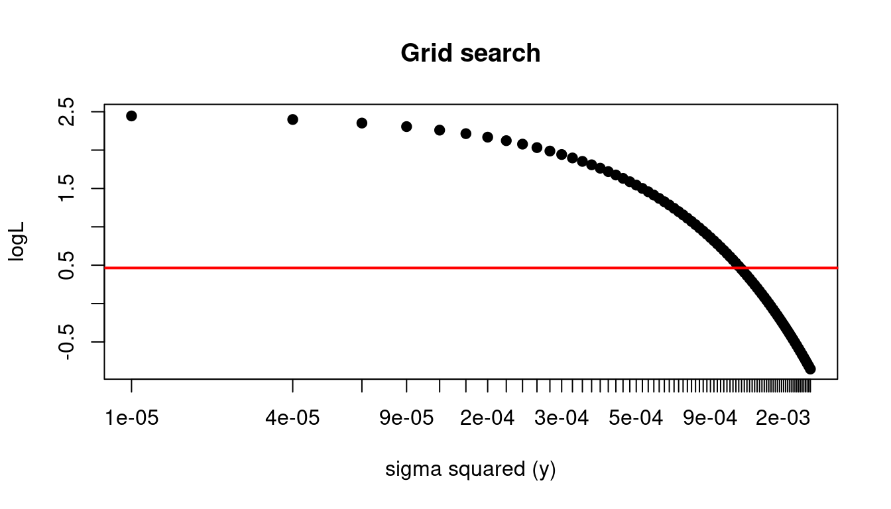

Overview
This document describes an R-package for estimating parameters for a suite of comparative methods based on the Ornstein-Uhlenbeck process as a model of adaptive evolution. We refer to this program as SLOUCH 2.0 since it builds on the models in SLOUCH 1.0 (Hansen et al. 2008). SLOUCH 1.0 dealt with a continuous trait that evolves as an Ornstein-Uhlenbeck process around an optimal state that itself depend on an environmental variable that evolves as if by a Brownian motion. For the current version we have extended the model to deal with an optimal state that depends on multiple randomly evolving predictors and multiple direct effect predictors. We also describe in more detail how to include measurement error in the analyses. SLOUCH 2.0 also includes functionality designed to deal with traits that evolve in response to fixed categorical niches that can be mapped onto a phylogeny and then used to estimate niche optima for the response trait (Hansen, 1997; Butler & King, 2004). The multi-optima model is thus an alternative to Butler & King’s (2004) OUCH program, but it differs in a few crucial apects, as described below. SLOUCH 1.3 and earlier versions were built as an addition to OUCH, and data formats and some functions were borrowed from the original version of OUCH, either as is, or slightly modified. In SLOUCH 2.0 the phylogenetic tree format is revamped, and now uses the format used by the R-package APE (Paradis et al. 2004).
The fixed.fit function of SLOUCH 1.1 differs from the OUCH program as follows: a) it allows the user to estimate parameters using a non-ultrametric tree, such as those that include extinct species, b) it allows the user to incorporate measurement error in the response variable, c) it automatically calculates standard errors for estimated optima, goodness of fit as \(\text{R}^2\) and can be used to compute support regions for rates of adaptation and trait variances, d) it includes functionality to use both grid search and the built-in R optimizing functions to estimate parameters, and e) it includes various options to deal with intercept estimation, which can be problematic. [Do we need to compare with OUCH?]
SLOUCH 2.0 also includes Brownian-motion models where the optima are instead modeled as trends. This document is written to serve as an updated user manual for SLOUCH 2.0. It provides a summary of the rationale for the methods, and illustrates them with examples based on the Liolaemus (ungulate teeth?) data set. It extends the user manual for SLOUCH 1.0 by discussing multiple regression and ANOVA type of models for the optimum, and gives more details on modeling non-ultrametric trees and measurement error. The mathematical and conceptual basis of the adaptation-inertia methods are presented and discussed in Hansen (1997), Butler & King (2004), and Hansen et al. (2008). A user of SLOUCH 2.0 should also consult these papers.
Comparative methods for adaptive hypotheses
Background
Comparing the trait values of groups of related species to their predicted optima in different environments or time periods can provide powerful tests of adaptive hypotheses (e.g. Ridley 1983; Harvey & Pagel 1991). The distributions of current species trait values at the current tips of a phylogeny (and fossil data or reconstructed ancestral states within the phylogeny if available) however, may reflect, adaptation, phylogenetic inertia, both of these, or none of these. We use the term phylogenetic inertia in the sense of resistance to adaptive change i.e. it comes about when related species inherit an inert trait from a common ancestor, which then resists adaptive change to new optima. Hence, if inertia is present, observed trait values may reflect both adaptive change as well as an ancestral trait influence. When testing an adaptive hypothesis with such data, the constraints provided by such resistance to change for current trait values as they evolve towards their optima need to be controlled for (and similarly, the effects of adaptation need to be controlled for when testing hypothesis of phylogenetic inertia).
Most contemporary comparative methodologies do not control for inertia in the sense defined above, but rather control for general effects of phylogeny. Their principal concern is to deal with statistical issues that arise from non-independent, correlated data that naturally arise from evolution along a branching phylogeny, and are usually used to remove these correlations before the actual analysis takes place. Phylogenetic effects, however, will also be present when traits adapt to variables that are themselves phylogenetically structured. Such effects should not be controlled for when studying adaptation and need to be separated from inertia. Furthermore, most contemporary methods assume that traits evolve as a Brownian motion, a crucial assumption and one that provides the analytical techniques to remove the correlations (e.g. independent contrasts). Numerous studies however, have pointed out that comparative method that assumes a Brownian motion as the underlying evolutionary process are not suitable for studying adaptation towards optima (e.g. Hansen & Orzack, 2005). A Brownian-motion process consists only of a stochastic component, where the expected mean value must equal the common ancestral state at the base of the species phylogeny. There is no mechanism in the process that allows one to specify adaptation to or maintenance at specific optima. Even if the ancestral state is at the optimum and the optimum does not change through time, any deviations from the optimum relationship generated by the stochastic Brownian-motion process will be inherited and there is no mechanism that allows a single species trait to return to its optimum value.
Hansen (1997), Butler & King (2004), Hansen & Orzack (2005) and Hansen et al. (2008) have shown that comparative methods based on an Ornstein-Uhlenbeck (OU) process are more suited to studying adaptive hypotheses using comparative data. The OU process, unlike a pure Brownian motion, consists of a deterministic component (which can be used to model adaptation of a trait towards an optimum) as well as a stochastic component (which models the random fluctuations of the trait as it evolves towards the optimum (see equations below). In fact if we take away the deterministic component of an OU process, we are left with a Brownian motion.
Comparative methods built around an Ornstein-Uhlenbeck process
The Ornstein-Uhlenbeck process describes stochastic evolution with a deterministic tendency to move towards a fixed state (Hansen & Martins 1996). To model adaptive evolution in a comparative data set, we interpret this fixed state as a “primary optimum”, defined as the average fitness optimum that would be reached by a large number of independent species evolving for a sufficiently long time in a given niche to be free of any ancestral influence (Hansen 1997). The model assumes that primary optima exist at any point in time (on the phylogeny), and the idea is to test hypotheses about the effect of specified environmental variables on the primary optima. Currently, the software allows the primary optimum to be be modeled as a multiple regression on several continuous “random” variables, or as a one-way ANOVA on fixed, categorical variables. If we let \(\theta(x_1, x_2 \dots)\), be the primary optimum as a function of environmental variables, \(x_1, x_2 \dots\), then for the regression model, we have:
\[ \theta(x_1, x_2 \dots) = b_0 + b_1x_1 + b_2x_2 \dots \]
where \(b_0\) is an intercept, and \(b_1, b_2 \dots\) are regression slopes on the environmental variables. For the ANOVA model we let \(x_1, x_2 \dots\) be indicator variables indicating different categorical states of the environment, and we write
\[ \theta(x_1, x_2 \dots) = \theta_1x_1 + \theta_2x_2 \dots \] where \(\theta_1x_1, \theta_2x_2 \dots\) are parameters describing the state of the primary optimum in the different environments or niches. The goal is to estimate the parameters \(b_i\) or \(\theta_i\) to test whether particular aspects of the environment have an effect on the optimum or not. Our adaptive hypotheses thus takes the form: Given that there is a single optimum, the species are adapted to variable \(x\) if \(x\) has an (important) effect on the optimum. As we will see, the methods also allow for assessments of how strongly the species tend to evolve towards the optimum, and thus to reject the base assumption of adaptation altogether. In both the fixed and random predictor cases, the evolution of the response traits, \(y\), can be represented by the stochastic differential Ornstein-Uhlenbeck process equation:
\[ dy = -\alpha(y - \theta)dt + \sigma_ydW_y \]
which is interpreted as follows: \(dy\) is the change in \(y\) over a time step dt, \(\alpha\) is a parameter measuring the rate of adaptation towards the optimum, \(dW_y\) is a white-noise process having independent, normally- distributed random changes with mean zero and unit variance. The standard deviation of the random changes is given by \(\sigma_y\) and \(\theta\) are the fixed or random optima as defined above. Categorical predictor variables must be mapped on the phylogeny a priori. The method treats these as known. For the random predictors we have an additional stochastic differential Brownian-motion process to describe their evolution on a phylogeny:
\[ dx = \sigma_xdW_y \]
where \(\sigma_x\) gives the standard deviation of the random changes (hence the rate at which the predictors change). These dynamical equations can be solved for the different assumptions about the optimum. With fixed, categorical predictor variables, the model predicts that the species data will be of the form:
\[ y_i = c_{0i}y_a + c_{1i}\theta_1 + c_{2i}\theta_2 \dots + r_i \] where \(y_a\) is a parameter describing the state of the trait at the root of the tree, the coefficients, \(c_{ji}\) , are determined by the time on the phylogeny the species \(i\) has spent in environment \(j\), such that more recent environments are weighted more than more ancient environments. The weights are determined by the rate of adaptation, \(\alpha\). More specifically, \(c_{ji}\) is a sum over all time intervals in the past history of species \(i\) where this species experienced environment \(j\), and each interval contributes a term \(e^{-\alpha t} - e^{\alpha s}\), where \(t\) is the time back to the end of the interval, and \(s\) is the time back to the beginning of the interval (see Hansen (1997) for formal derivation). The coefficient for the parameter \(y_a\) is \(c_0 = e^{ -\alpha t}\) , where \(t\) is the time from the root to species \(i\). Note that if \(\alpha\) is large, then only the most recent environment will contribute. Ancient environments only contribute if the rate of adaptation is low. SLOUCH will automatically compute these coefficients given a mapping of niches on the tree. The residual terms, \(r_i\), are assumed to be normally distributed with mean zero and variances and covariances given later. These are also computed automatically.
For random, continuous predictor variables, evolving as if by a Brownian motion, the model predicts:
\[ y_i = k + \rho(\alpha t_i)b_1x_{1i} + \rho(\alpha t_i)b_2x_{2i} \dots + r_i \]
where \(x_{ij}\) is the current state of predictor variable \(j\) for species \(i\). The intercept (\(k\)) is discussed below, and \(\rho(\alpha t_i)\) is a “phylogenetic correction factor”, given as:
\[ \rho(\alpha t_i) = (1 - \frac{1 - e^{-\alpha t_i}}{\alpha t_i}) \] where \(t_i\) is the time from root to species \(i\). On ultrametric trees, this factor is identical for all species. The correction factor varies between 0 and 1. It describes how phylogenetic inertia makes the “evolutionary” regressions of y on x less steep than the underlying “optimal” regressions, \(b\). If the rate of adaptation or the time back to the origin of the radiation are very high, \(\rho(\alpha t_i) = 1\), and the evolutionary regression will equal the optimal regression. The residual terms, \(r_i\), are normally distributed with mean zero and variances and covariances given later. The residuals and the phylogenetic correction factors are computed automatically by SLOUCH, and both evolutionary and optimal regressions are returned. In addition to estimating the parameters, \(\theta\) or \(b\), describing the relationship of the primary optimum to the environmental variables, we also need to estimate the parameters \(\alpha\) and \(\sigma_y\) describing the rate of evolution, and in the random evironment model, we also need the rate of evolution of the environment, \(\sigma_x\). The estimation methods are described below. Here, we just note that we will work with the transformed parameters:
\[ \begin{aligned} t_{1/2} =& \frac{\log(2)}{\alpha} \\ v_y =& \frac{\sigma^2_y}{2\alpha} \end{aligned} \] These are both easier to interpret and easier to estimate than \(\alpha\) and \(\sigma_y\) . The phylogenetic half life, \(t_{1/2}\), is the time it takes for the expected trait value to move half the distance from the ancestral state to the primary optimum. The half life provides a useful metric to asses the strength of phylogenetic inertia as it is on the same linear scale as the phylogenetic branch lengths. If the half life is short relative to phylogeny, it means that adaptation to the primary optimum is rapid in expectation, and if the half life is long, it means that ancestral influences constrain the adapting trait. Consequently, if large, we would expect the species traits to be poorly adapted to the primary niches. A half life of infinity corresponds to evolution governed by a Brownian-motion process where there is no tendency to move towards the optimum, and a half life of zero corresponds to instant adaptation. The parameter \(v_y\) is the variance expected when the adaptive and stochastic forces are in stochastic equilibrium. The residual variances and covariances of the fixed-effect model were derived in Hansen (1997). They are
\[ \begin{aligned} \text{Var}[r_i] &= v_y(1 - e^{-\alpha t_i}) \\ \text{Cov}[r_i, r_j] &= v_y e^{-\alpha t_{ij}}(1 - e^{-2 \alpha t_a}) \end{aligned} \] where \(t_i\) is the time from root to species \(i\), \(t_a\) is the time from root to the most recent common ancestor of species \(i\) and \(j\), and \(t_{ij}\) is the time separating species \(i\) from species \(j\) (i.e. the sum of the distances from \(i\) and \(j\) to their most recent common ancestor). For the random effect model, Hansen et al. (2008) derived the residual covariances as:
\[ \begin{aligned} \text{Cov}[r_i, r_j] &= (\frac{\sigma^2_{\theta} + \sigma^2_{y} }{2\alpha}) (1 - e^{-2\alpha t_a})e^{-\alpha t_{ij}} + \\ \sigma^2_{\theta}(t_a \frac{1 - e^{-at_i}}{\alpha t_i} \frac{1 - e^{-at_j}}{\alpha t_j} - &\frac{1 - e^{-at_a}}{\alpha}(e^{-\alpha t_{ia}} \frac{1 - e^{-\alpha t_j}}{\alpha t_j} + e^{-\alpha t_{ja}} \frac{1 - e^{-\alpha t_i}}{\alpha t_i})) \end{aligned} \]
The parameter \(\sigma^2_\theta\) in the above equation equals \(b_1^2\sigma_{x1}^2 + b_2^2\sigma_{x2}^2 + \dots\), assuming the predictor variables are not correlated. The instantaneous variances, \(\sigma_{xi}^2\), of the predictor variables are estimated in advance. Note that this is considerably more complex than with fixed effects, and also depend on the regression parameters \(b_i\). SLOUCH uses an iterated estimation procedure to account for the effects of the regression parameters in the residual variance matrix.
Estimation specifics
The intercept, \(k\), in the random-effect model is given as:
\[ k = e^{-\alpha t}y_a + (1 - e^{- \alpha t})b_0 + (1 - e^{-\alpha t} - \rho(\alpha t))(b_1x_{a1} + b_2x_{a2} + \dots) \]
where \(y_a\) and \(x_{aj}\) are the ancestral states of the trait, \(y\), and the predictor variables, \(x_j\), and \(b_0\) is the true intercept of the optimal regression. As \(t\) is the time from root to the species, we also see that the intercept on a non-ultrametric tree will differ from species to species. Clearly, \(k\) is not a parameter of biological interest. What we would like is to get estimates of its components, and in particular of the “optimal” intercept, \(b_0\). For species on a non-ultrametric phylogeny, it is technically possible to get independent estimates of \(b_0, y_a\) and the \(x_a\)’s, but unless the phylogeny is strongly non-ultrametric, these would be poorly resolved, and the individual estimates are likely to be highly unreliable. We generally do not recommend separate estimates of these parameters, and for an ultrametric phylogeny, we can only obtain an estimate of the composite \(k\). An estimate of the optimal intercept may, however, be obtained indirectly with an additional assumption. First, note that SLOUCH returns independent estimates of the ancestral states \(x_a\) based on the assumption that the predictors evolve as if by a Brownian motion. The problem is then only to get an estimate of the ancestral state of the trait, \(y_a\). One resonable way to do this is to assume that the common ancestor was optimal, and use \(y_a = b_0 + b_1x_{a1} + b_2x_{a2} \dots\). From this we can derive an estimate of the optimal intercept as:
\[ b_0 = k + (\rho(\alpha t) - 1)(b_1x_{a1} + b_2x_{a2} \dots) \] where \(k, b\)’s, \(x_a\)’s and \(\rho(\alpha t)\) are all output from the SLOUCH analysis. This may be useful for plotting of the optimal regression, etc. The error due to ancestral optimality is likely to be very small unless the phylogenetic half-life is very large.
Model selection
SLOUCH output provides the user with various information criteria in order to compare models with different combinations of predictor variables. These are the AIC, the small small size corrected AIC (AICc) and the stricter SIC (Burnham & Anderson, 1998). For continuous predictor models, these criteria can be used to reduce the number of informative predictors in a multiple regression, or to decide which is the best predictor of a given trait‘s evolution. These information criteria can also be used to decide whether a single or multiple optima Ornstein-Uhlenbeck process or a Brownian-Motion process best describes a trait’s evolution. For models with fixed categorical predictors, these information criteria are useful for assessing which categories influence a trait’s evolution. In this way the user can either pool different categories or further subdivide a given category into biological meaningful categories in order to test various hypotheses concerning differential selective niches. We note however, that the information criteria will sometimes pick models with very strange parameter estimates like optima or ancestral states that are way out of biological bounds, or stationary variances of zero. Such models should be regarded with skepticism, and one should look at the support surfaces (see below) to see if there are other peaks in the likelihood surface with more reasonable estimates.
Measurement variance
Martins & Hansen (1997) and Ives et al. (2007) discuss how to incorporate measurement error into a phylogenetic comparative analysis. Most often, a comparative analysis involves using species means as input values. In this case the main component of measurement error is estimation error in the mean (or whatever other statistics are used) resulting from sampling a finite number of individuals. If each mean species value to be used in the regression was obtained from a large number of individuals (> 20-30 or so) the square of the standard error (i.e. the estimation variance) can be entered into the measurement error column for that variable. If no measurement error is to be included, then simply add a column of zeros (this can also be done in R itself by specifying a vector of zeros of length \(n\), the number of species). We also refer the reader to the section below entitled measurement variance in the Liolaemus example for a more detailed example. SLOUCH deals with measurement error in the response variable by adding measurement variance to the diagonals of the residual variance matrix. Measurement variance in the random predictor variable(s) is incorporated by multiplying it by the square of the uncorrected slope parameter and then adding it to the diagonals of the residual variance matrix in the manner of an iterated generalized least squares (GLS) estimation. Measurement covariance between response and predictor variables can be incorporated by adding two times the measurement covariance times the uncorrected slope parameters to the variance matrix (not yet implemented). If the observational errors in the predictor variables are non-zero, the generalized least squares estimator may be biased. A bias correction for the regression coefficients is implemented according to Hansen & Bartoszek (2012).
Caveats and limitations
As with any statistical model, the quality of the parameter estimates is dependent on the quality of the data and certain assumptions concerning the residuals must be met. SLOUCH utilizes both measured trait values and the phylogenetic topology and branch lengths as data. With regards to the trait values, we assume that a linear relationship exists between expected optimal trait values and the predictor variables. Although we could perform non-linear regression by entering quadratic terms in the model, this will most likely violate the assumption that the predictors evolve as a Brownian Motion and consequently we do not recommend this. It should also be kept in mind that any inferences drawn about the rates of adaption, phylogenetic inertia and its potential effects on trait values are conditional on the phylogeny used. Unfortunately SLOUCH does not at this time include routines for evaluating the effects of phylogeny uncertainty. We recommend performing the analysis on plausible alternative phylogenetic hypotheses to examine the effects of phylogenetic uncertainty on parameter estimates. Simulation may also be useful here for examining potential interactions between true parameter values and alternative phylogenies.
Data requirements
Checklist
- A rooted phylogeny with branch lengths. Both ultrametric and non-ultrametric trees can be used, but this will have implications for reliable estimation of ancestral states. Polytomies and non-branching edges are not a problem but each branch must have a length. The units of the lengths are arbitrary and can be given in time units or number of nucleotide substitutions. A lot of the power of this method comes from having accurate branch lengths and topologies so some care should be taken in obtaining these.
- Measurements of a continuous response variable and one or more continuous predictor variables for the species at the tips of the phylogeny or a fixed predictor variable with different levels to represent different fixed niches. Missing values are not allowed. The observational or measurement errors of the continuous response and predictor variables can and should be included and accounted for.
- An adaptive hypothesis relating the response variable to the predictors. The idea of the OU models is that the response variables evolve towards optima that are estimated by the methods.
- A computer with the R program on it. This is freeware and versions for Windows, MacOS and GNU/Linux can be downloaded from https://www.r-project.org/.
Installing SLOUCH and loading the tree
The source code for the developmental version of SLOUCH is available at https://www.github.com/kopperud/slouch, or can be obtained from the authors at request. The latest stable version of SLOUCH, including its dependencies, can be installed from the CRAN (Comprehensive R Archive Network) by entering the following command:
install.packages("slouch") The phylogenetic trees used in SLOUCH are encoded as an object of class phylo. Consult the package APE (Analysis of Phylogenetics and Evolution, Paradis et al. 2004) for the base functionality, and perhaps auxillary packages such as treeio and ggtree (Yu et al. 2016) for more modern and extensive functionality when importing, exporting or plotting phylogenetic trees from various formats. For the purposes of illustrating syntax, we will use a dataset of artiodactyl neocortices bundled with the package (see ?neocortex), and a corresponding phylogenetic tree (Toljagić et al. 2017). First, we will organize the neocortex data and associated annotation data.
# Load necessary packages
library(ape)
library(slouch)
## Load the phylogenetic tree with annotation data
data(artiodactyla)
phy <- artiodactyla
## Load the neocortex dataset
data(neocortex)
## Plot the tree
plot(ladderize(phy), cex = 0.6)
Now, we have a phylogenetic tree with corresponding morphological data for all of the extant species. If you use your own data to fit models, it is recommended to store the data for the terminal branches in a data frame or in a similar data structure. In order to line up the data frame with the tree, SLOUCH requires the species in the data frame need to be in a particular order.
## Check whether they are lined up correctly
neocortex$species == phy$tip.label## [1] FALSE FALSE FALSE FALSE FALSE TRUE FALSE FALSE FALSE TRUE TRUE
## [12] TRUE TRUE FALSE FALSE FALSE FALSE FALSE FALSE FALSE FALSE FALSE
## [23] FALSE FALSE FALSE FALSE FALSE FALSE FALSE FALSE FALSE FALSE FALSE
## [34] FALSE FALSE FALSE FALSE FALSE FALSE FALSE FALSE FALSE FALSEUnsurprisingly, not all of the species are in their correct places; we will have to reorder the data frame. Here is one way to do it.
neocortex <- neocortex[match(phy$tip.label, neocortex$species), ]
## Check if they line up again
neocortex$species == phy$tip.label## [1] TRUE TRUE TRUE TRUE TRUE TRUE TRUE TRUE TRUE TRUE TRUE TRUE TRUE TRUE
## [15] TRUE TRUE TRUE TRUE TRUE TRUE TRUE TRUE TRUE TRUE TRUE TRUE TRUE TRUE
## [29] TRUE TRUE TRUE TRUE TRUE TRUE TRUE TRUE TRUE TRUE TRUE TRUE TRUE TRUE
## [43] TRUEMeasurement variance in the artiodactyl neocortex example:
Comparative analyses based on species averages should consider the estimation error in these averages as measurement error. This is particularly pressing in fields such as evolutionary physiology, where the measurements of individual organisms may be laborious and expensive. Obtaining many measurements from many individuals from many species is difficult, and, as seen in the Oboussier neocortex-data, one often ends up with sample sizes that are small and uneven across species. In such a situation the variance attributable to measurement error can be a substantial fraction of the total, and one wants to weigh the species data according to their reliability. It is also possible that measurement variance may generate a downward bias in estimates of phylogenetic effects, because it makes species appear less statistically correlated than they are in reality. As discussed above, SLOUCH can incorporate measurement variance in both response and predictor variables.
For the neocortex data, estimates of measurement variance can be obtained as the square of the standard error of the species means. There is, however, a practical difficulty in that small sample sizes also makes for unreliable estimates of the measurement variance; the standard error of a species average obtained from a handful of individuals is so inaccurate as to be worthless. We therefore adopted the procedure of assuming that the within-species variance of each variable was the same for all species. The within-species variance estimated average of the sample variances of each variable was estimated as a sample-size-weighted average of the sample variances of each species; i.e. as
\[ \sigma^2_w = \frac{\sum_i \sigma_{wi}^2 (n_i - 1)}{\sum_i (n_i - 1)} \]
where \(\sigma_{wi}^2\) is the sample variance of species \(i\), and \(n_i\) is the sample size of species \(i\). In this way, the larger sample sizes are weighted more. We then estimated the measurement variance of each species as \(\sigma_w^2 / n_i\). We recommend this averaging procedure to estimate measurement variance for any species mean based on a small sample of individuals.
Parameter estimation in SLOUCH
Testing for phylogenetic effects
The idea here is to test whether the phylogenetic relationships have an influence on the distribution of a single variable. Most phylogenetic comparative methods will begin with this step. It is important to realize, however, that phylogenetic effects are not necessarily the same thing as phylogenetic inertia. A variable can be seen to have quite strong phylogenetic effects but such a pattern can easily come about if that variable is evolving towards optima associated with niches that themselves exhibit strong phylogenetic effects. Phylogenetic inertia needs to be measured from the residuals of a model that includes predictor variables that may or may not themselves be phylogenetically structured. The way to test for an overall phylogenetic effect in the SLOUCH program is to perform a regression with no predictors (i.e. including the intercept or grand mean). To do this we use a function called slouch.fit. The program will estimate the phylogenetic half-life \(t_{1/2}\) (\(t_{1/2} = \log(2)/\alpha\)), and depending on user input, either the instantaneous variance parameter \(\sigma_y^2\) or the stationary variance \(v_y\) (where \(v_y = \sigma^2_y / 2 \alpha\)), and the intercept (\(b_0\)). The phylogenetic half-life and \(v_y\) are estimated using likelihood, and there are two techniques to find the maximum likelihood estimates. The first is a grid search where we provide vectors of potential values for each parameter to the program to find the combination that maximizes the likelihood. The second is to use the built-in R optimization routines to find the best parameters. This technique uses the method “L-BFGS-B” in the optim(...) function to estimate parameters in the OU model, and method “Brent” when \(\alpha\) is constrained to zero and the model is reduced to a Brownian motion. This technique is hereafter referred to as the “hillclimber” algorithm. The regression parameters (in this case the intercept) are estimated automatically by the program using iterated generalized least squares and are contingent on the best estimates of \(\alpha\) and \(v_y\).
The best way to find the parameters is to start with a rough grid (i.e. values of \(t_{1/2}\) and \(v_y\) incremented by large integer numbers) and then to “home in” on the best supported region with finer scaled grids. Some caution and “trial and error” need to be exercised here as it is possible to miss the support region entirely if the grid values are too widely spaced. There are several ways to create a vector of values in R for this purpose:
## The manual way
h <- c(0.01, 0.1, 1, 5, 10, 15, 20, 100)
vy <- h
## Using the seq function
h <- seq(from = 0.001, to = 100, length.out = 15)
vy <- seq(from = 0.001, to = 5, length.out = 15)
## Using a seq function with logarithmically spaced steps
h <- lseq(from = 0.001, to = 100, length.out = 15)
vy <- lseq(from = 0.001, to = 5, length.out = 15) Using the default values of the model fitting function slouch.fit, we use an initial grid search to find the maximum likelihood estimates of \(t_{1/2}\) and \(v_y\) in a single-optimum model, and change the grid location depending on how the surface looks.
model0 <- slouch.fit(phy = phy,
hl_values = seq(0.001, 12, length.out = 10),
vy_values = seq(0.1, 1, length.out = 10),
species = neocortex$species,
response = neocortex$neocortex_area_mm2_log_mean)
plot(model0)Three-dimensional joint support region for the estimates of half-lives and stationary variances, for the single-optimum model.
The vertical axis in Figure (…) represents the log-likelihood standardized so that the maximum log-likelihood equals 0. The two horizontal axes are the vector of hl_values and vy_values that we defined in the function arguments. The peak that rises out of the flat surface therefore, represents the specific combination of hl_values and vy_values that are more than two support units below the best estimate. The flat surface itself represents parameter values falling outside the 2-unit support region (as defined by Edwars 1992). If the user prefers to plot an \(m\)-unit support region, a support value of \(m\) can be specified in slouch.fit by supplying the argument slouch.fit(... ,support = m).
model1 <- slouch.fit(phy = phy,
hl_values = seq(0.001, 150, length.out = 5),
vy_values = seq(0.1, 2.5, length.out = 5),
species = neocortex$species,
response = neocortex$neocortex_area_mm2_log_mean)
plot(model1)Another slice of the log likelihood surface for the same single-optimum model
The model objects model0 and model1 have a print method that displays a summary of the output (not shown). The plots of the likelihood surfaces are both based on the same data, but with different grid location and resolution. This graphical output is useful for finding and refining the support region where the aim would be to identify the upper and lower 2-unit marginal support regions for \(t_{1/2}\) and \(v_y\). Note that the support region is relative to the best estimate among the parameters evaluated in the entire parameter search (including parameters evaluated with the hillclimber). Thus it is essential to include the best estimate when calculating the support set. The optima and model fit statistics that are reported in the summary are conditional on the combination of these \(t_{1/2}\) and \(v_y\) that give the highest log-likelihood; in this case the peak of the surface in the likelihood plot. If the grid-search does not contain the true maximum likelihood, the model outputs will reflect this. It is also possible to use other packages to plot the grid-search likelihood surface, for a more aesthetic look (not run).
library(plotly)
p <- plot_ly(x = model0$supportplot$hl,
y = model0$supportplot$vy,
z = model0$supportplot$z) %>%
add_surface() %>%
layout(title = "Grid-search",
scene = list(xaxis = list(title = "Phylogenetic half-life"),
yaxis = list(title = "Stationary variance"),
zaxis = list(title = "Log-likelihood")))
pAnother, perhaps more convenient way of estimating parameters is to use the hillclimber function. On default it will start on a random combination of \(t_{1/2}\) and \(\sigma_y^2/2\alpha\), but this may also be specified. While the hillclimber might seem both faster and more accurate at first glance, there are some drawbacks. If the likelihood search space has one or more local maxima, the hillclimber may converge at a sub-optimal location and give parameter estimates that are not truly maximum-likelihood estimates. Additionally, even though the hillclimber may converge at some local or global maximum, it will not indicate whether the support region of the parameters is narrow or wide. One problem when using the hillclimber is that, depending on the specified model, the residual variance-covariance matrix \(\mathbf{V}\) may collapse if \(\sigma_y^2/2\alpha\) reaches zero. The immediate consequence is that matrix is non-invertible, and the program will crash. If within-species observational error is non-zero and added to the model, this does not happen. In order to use the hillclimber in this scenario, it may be necessary to constrain its search space such that \(\sigma_y^2/2\alpha\) does not enter zero or close to zero. The exact feasible boundary for this may depend on the scale of the response trait.
model2 <- slouch.fit(phy = phy,
species = neocortex$species,
response = neocortex$neocortex_area_mm2_log_mean,
hillclimb = TRUE,
lower = c(0.001, 0.01))
plot(model2)The summary of model2 can be generated by typing print(model2), and displays the best estimates of all the parameters where support for the regression parameters are given as standard errors, the phylogenetically corrected \(\text{R}^2\) value as the percentage of variance accounted for by the regression, and log-likelihood values as well as various information criteria for the best estimate model-fit. This output should be ignored until the grid search is deemed fine enough to accurately estimate \(t_{1/2}\) and \(v_y\), or if we trust that the hillclimber has converged at a global maximum.
Interpreting the parameters
The phylogenetic half-life parameter (\(t_{1/2} = \log(2) / \alpha\)) measures the influence of the ancestral state of the variable in question relative to the tendency to evolve towards the common ancestral state (the intercept). Conversely, \(\alpha\) measures the rate of adaptation. If the best estimate of \(t_{1/2}\) is 0, the ancestral state does not influence the current state of the variable. The larger \(t_{1/2}\) gets, the more influence the past state of the variable has on its current state (i.e. the trait‘s evolution approaches a Brownian motion as \(t_{1/2}\) approaches infinity). The units of the phylogenetic half-lives are the same units as the branch lengths in the phylogenetic tree, phy$edge.length. The total depth, or distance from the root, can for all nodes be calculated with node.depth.edgelength(phy). For this phylogenetic tree the maximum tree depth is about 27 million years. The phylogenetic correction factor is another measure of the strength of inertia:
\[ \rho(\alpha, t) = (1 - \frac{(1 - e^{-\alpha t})}{(\alpha t)}) \]
It can range anywhere between 0 and 1 where the closer to 0 it is, the stronger the inertia. The intercept-only model is also useful for testing one of the assumptions of the OU-BM model; that the predictor variables evolve as a Brownian motion. The stationary variance (\(v_y = \sigma^2_y / 2\alpha\)) of the joint OU-BM process is a measure of the relative influence of stochastic factors in the adaptive process relative to the primary adaptive force. Secondary stochasticity is generated by a combination of stochastic influences (such as changes in unmeasured selective forces, genetic drift, etc) on the response variable as it evolves towards the optimum or optima.
Adding predictors and testing for phylogenetic inertia
Continuous random predictor
The parameters we estimate for the models that have a single random predictor variable are: \(t_{1/2}\) (and therefore \(\alpha\)), \(\sigma_x^2\), \(v_y\), and the regression parameters \(b_i\). Recall that the regression parameters \(b_i\) can be given in one of two ways, as an evolutionary regression or as an optimal regression where the latter is “corrected” by the phylogenetic correction factor. The predictor variance, \(\sigma_x^2\), is estimated a priori by SLOUCH. Once again we use the slouch.fit function except that this time we add in the predictor variable (and its measurement variance). The estimation procedure itself is performed in a similar manner as for the intercept-only models above. For example, if we wanted to perform a regression of log neocortex size (\(\text{mm}^2\)) on log brain mass (g), we would type:
braincentered <- neocortex$brain_mass_g_log_mean - mean(neocortex$brain_mass_g_log_mean)
model3 <- slouch.fit(phy = phy,
species = neocortex$species,
response = neocortex$neocortex_area_mm2_log_mean,
mv.response = neocortex$neocortex_se_squared,
random.cov = braincentered,
mv.random.cov = neocortex$brain_se_squared,
lower = c(0.001, 0.01),
hillclimb = TRUE)
plot(model3)plot(x = braincentered,
y = neocortex$neocortex_area_mm2_log_mean,
xlab = "Mean log brain mass (g)",
ylab = "Mean log neocortex area (mm2)")
abline(model3$ev.reg$coefficients_bias_corr[,1],
col = "black", lwd = 2)
abline(model3$opt.reg$coefficients_bias_corr[,1],
col = "orange", lwd = 2)The evolutionary (black) and optimal (orange) regression lines for the model of mean log neocortex area (mm\(^2\)) on mean log brain mass (g), both corrected for bias due to measurement error in mean log brain mass.
model3$opt.reg$coefficients## Estimates Std. error
## (Intercept) 9.668006 0.03718931
## braincentered (bm) 0.919889 0.03892640While the single-optimum model showed a very strong phylogenetic signal, this model exhibits much less phylogenetic inertia, with best estimate of the phylogenetic half-life (\(t_{1/2}\)) being 1 myr. Here, the optimal regression is steeper than the evolutionary regression. It is also possible to fit a model with multiple continuous covariates, however the input to random.cov must be a matrix or data frame that has column names, and the observational error passed to mv.random.cov must be a matrix or data frame of the same shape as random.cov.
bodycentered <- neocortex$body_mass_g_log_mean - mean(neocortex$body_mass_g_log_mean)
model4 <-
slouch.fit(phy = phy,
species = neocortex$species,
response = neocortex$neocortex_area_mm2_log_mean,
mv.response = neocortex$neocortex_se_squared,
random.cov = cbind(braincentered,
bodycentered),
mv.random.cov = cbind(neocortex$brain_se_squared,
neocortex$body_se_squared),
lower = c(0.001, 0.01),
hillclimb = TRUE)
plot(model4)Estimation error and model support
The type of estimation error (i.e. log-likelihood units or standard errors) reported in the SLOUCH 2.0 output depends on the statistical technique used to obtain a particular parameter (maximum likelihood or GLS). The parameters \(\alpha\) (and its relatives, \(t_{1/2}\) and the phylogentic correction factor, \(\rho\)) and \(v_y\) are estimated with maximum likelihood. Note that in the 2-unit support region surface plot we plot \(t_{1/2}\) against \(v_y\), rather than \(\alpha\). The reason for this is that \(t_{1/2}\) is easier to interpret as a measure of phylogenetic inertia as it can be interpreted on the same linear scale as the branch lengths (and this is also the reason we provide a vector of half life values rather than \(\alpha\) values during the grid search). The best estimates of \(t_{1/2}\) and \(v_y\) are however a joint estimate and for this reason the support region (the three-dimensional log-likelihood plot) is given as a measure of uncertainty for \(t_{1/2}\) and \(v_y\) jointly. The number of potential \(t_{1/2}\) and \(v_y\) values to include in the support region is, as mentioned previously, defined by the user (where by default, this is all estimates that give greater than maximum support - 2 support units). The marginal lowest and highest values of \(t_{1/2}\) within the support region, conditional on the best estimate of \(v_y\), can also be obtained using the figure and the support-region tables in the output (and vice versa for \(v_y\)). The slouch.fit function can also take scalars rather than vectors, which may be useful for finding the marginal support region of \(t_{1/2}\) conditional on \(v_y\) (and vice versa). In this case the 2-unit support region is no longer plotted, however the support limits can still be derived using the model summary or by looking at the elements of the model object. The regression parameters are estimated using iterated GLS and their estimation errors are given as standard errors, which can then be used to construct confidence intervals. Along with the \(b_i\) estimates themselves, SLOUCH output provides the phylogenetically-corrected \(\text{R}^2\) value as the percentage variance accounted for by the regression. The “goodness of fit” of the model itself to a particular data set is given as the support (logL) where a higher value means a better fit. In addition, SLOUCH provides three information criteria for model evaluation: AIC, AICc and the stricter SIC (also called the BIC). Which one to use is up to the user but we recommend the small sample size AIC (AICc, see Burnham & Anderson, 1998). For the information criteria, smaller values mean a better model fit. These values can be compared across models that use different predictor variables, different number of predictors, different types of predictor variable (e.g. categorical vs. continuous), or different models of evolution (Ornstein-Uhlenbeck vs. Brownian motion). Note that all of the model fit statistics, as well as the parameter search itself, is conditional on the naive GLS estimator, i.e. prior to any bias-correction routines.
Estimating the intercept
The slouch.fit function will on default estimate the intercept \(k\). If the phylogenetic tree is non-ultrametric, for example due to the inclusion of extinct species, it is possible to estimate the components of \(k\). Recall that, when \(y\) is evolving according to an Ornstein-Uhlenbeck process in response to one or more predictors \(x\) evolving as Brownian motions, the intercept \(k\) is
\[ k = e^{-\alpha t}y_a + (1 - e^{- \alpha t})b_0 + (1 - e^{-\alpha t} - \rho(\alpha t))(b_1x_{a1} + b_2x_{a2} + \dots) \]
SLOUCH can independently estimate \(y_a\), \(b_0\) and the sum \(bx_a = (b_1x_{a1} + b_2x_{a2} + \dots)\). Using the same example with neocortex evolving in response to brain size, we would specify:
model5 <- slouch.fit(phy = phy,
species = neocortex$species,
response = neocortex$neocortex_area_mm2_log_mean,
mv.response = neocortex$neocortex_se_squared,
random.cov = braincentered,
mv.random.cov = neocortex$brain_se_squared,
lower = c(0.001, 0.01),
estimate.Ya = T,
estimate.bXa = T,
hillclimb = TRUE)The parameters \(y_a\) and \(bx_a\) represent the ancestral states for \(y\) and \(x\) separate from the regression intercept \(b_0\). Since this phylogenetic tree is ultrametric, we cannot recover independent estimates of these. If we would try to execute the above code, we would not be able to estimate the GLS coefficients since the model matrix becomes singular. Even if we had a non-ultrametric tree, the intercept components are often estimated with extremely low power, so it can make sense to estimate them as a combined intercept term. This is done by default, or by specifying slouch.fit(..., estimate.Ya = FALSE, estimate.bXa = FALSE) in the function call. The phylogenetic residual covariance matrix will always be computed based on the phylogenetic tree, whether it is ultrametric or not. In some cases (for example, when inertia is small), estimating the components of \(k\) will not work (due mainly to numerical issues because of unstable coefficient and parameter combinations in the intercept terms and non-convergence of regression parameters). Also note that, in the non-ultrametric case, each species theoretically has its own optimal intercept (\(b_0\)), however the reported estimate is actually an average of these. Its primary purpose is to allow us to plot a regression line.
Multiple optima & phylo-format
SLOUCH can fit models with multiple adaptive regimes or niches over the branches of the phylogenetic tree. We will fit neocortex size as a function of diet in artiodactyls. Trees in the phylo format are represented by the edges found in phy$edge, where each edge connects two vertices or nodes. All of the tip nodes have indices starting from 1, 2, 3 … until \(n_{tips}\), in this case 43. The root node has index \(n_{tips}\)+1, here 44, and the rest of the internal nodes have indices (\(n_{tips}\)+2, \(n_{tips}\)+3, …, \(n_{nodes}\)). When running this type of model, we will need to specify the internal adaptive regimes in the order of node indices (\(n_{tips}\)+1, \(n_{tips}\)+2, \(n_{tips}\)+3, …, \(n_{nodes}\)). The regimes for the tips must be supplied to the fixed.fact argument (slouch.fit(..., fixed.fact = neocortex$diet)), and the regimes for the internal nodes must be assigned to phy$node.label. In order to plot and visually verify that the ancestral state configuration is sensible, we need to have all the regimes in the order of the edges, not the nodes.
## Inspect the internal node regimes
## These have order n+1, n+2, n+3 ...
internal_regimes <- factor(phy$node.label)
## Concatenate tip and internal regimes. These will have order 1,2,3 ...
regimes <- c(neocortex$diet, internal_regimes)
## Pick out the regimes of the edges, in the order of phy$edge
edge_regimes <- factor(regimes[phy$edge[,2]])
plot(phy,
edge.color = c("Black", "Orange", "blue")[edge_regimes],
edge.width = 3, cex = 0.6)
If it looks like there are no visible mistakes, we can go ahead and fit the model in SLOUCH.
model6 <- slouch.fit(phy = phy,
species = neocortex$species,
response = neocortex$neocortex_area_mm2_log_mean,
direct.cov = neocortex$brain_mass_g_log_mean,
fixed.fact = neocortex$diet,
hillclimb = TRUE,
lower = c(0.001, 0.01))
model6$opt.reg$coefficients## Estimates Std. error
## Br 5.3746627 0.22276581
## Gr 5.6045135 0.30280314
## MF 5.5558922 0.22390136
## neocortex$brain_mass_g_log_mean 0.8203544 0.04314244Direct effect predictors
SLOUCH can also fit models with continuous covariates that don’t have any phylogenetic covariance structure, variables that influence the optimum directly and immediately. Here, both the grid-search and the hillclimber routine are used to find the maximum-likelihood estimates for \(t_{1/2}\) and \(v_y\).
model7 <- slouch.fit(phy = phy,
hl_values = seq(0.001, 5, length.out = 5),
vy_values = seq(0.001, 0.05, length.out = 5),
species = neocortex$species,
response = neocortex$neocortex_area_mm2_log_mean,
mv.response = neocortex$neocortex_se_squared,
direct.cov = neocortex$brain_mass_g_log_mean,
mv.direct.cov = neocortex$brain_se_squared,
hillclimb = TRUE,
lower = c(0.001, 0.0005))
model7$opt.reg$coefficients## Estimates Std. error
## (Intercept) 5.4052790 0.24164087
## neocortex$brain_mass_g_log_mean 0.8463384 0.04311938plot(model7)
Brownian-motion models
Until this point we have only looked at Ornstein-Uhlenbeck models of trait evolution. When \(\alpha = 0\), however, the model collapses into a Brownian motion with no pull towards the optimum and this is the case when the best estimate of the phylogenetic half-life is much larger than the tree depth (\(t_{1/2} >> t\)). The brown.fit() function can fit the same kinds of models that slouch.fit() does, except under a Brownian motion model of evolution. The stochastic differential equation is
\[ dy = \sigma_y dW_y \]
where \(dW_y \sim N(0, dt)\). The residual covariance is \(\text{Cov}[r_i, r_j] = \sigma_y^2t_a\), where \(t_a\) is the sum of shared branch lengths for species \(i\) and \(j\). With this model, we only estimate one parameter with likelihood: \(\sigma_y^2\), which in this example has units \((\log(\text{neocortex(mm}^2)))^2 \times \text{myr}^{-1}\). The parameters \(v_y = \sigma_y^2/2\alpha\) and \(t_{1/2}\) no longer enter the equation. The intercept-only model can be fitted by entering the following:
model8 <- brown.fit(phy = phy,
sigma2_y_values = seq(0.008, 0.05, length.out = 80),
species = neocortex$species,
response = neocortex$neocortex_area_mm2_log_mean,
mv.response = neocortex$neocortex_se_squared,
hillclimb = TRUE,
lower = 0.0005)
model8$opt.reg$coefficients## Estimates Std. error
## (Intercept) 9.75765 0.3670418plot(model8)
Keep in mind that, since there is no directional or stabilizing trend in a standard Brownian motion, the intercept is the same as the ancestral state \(y_a\). Unlike the OU process, there are no optima (\(\theta\)), and the rate of adaptation (\(\alpha\)) is not a part of the model. We can, however, expand the model to include regime-dependent trends:
\[ dy = \tau dt + \sigma_y dW_y \]
where \(\tau\) is one or more trends. The trends (\(\tau\)) in this model are equivalent to \(\tau = \lim_{\alpha \to 0}(\theta\alpha)\) under an OU model. The expected value of the trait is \[ \text{E}[y_i](t) = y_a + \sum_s{\tau_s t_s} \] where \(t_s\) is the total time that species \(i\) has spent in regime \(s\). With ultrametric trees, \(y_a\) can not be estimated independently of the trends \(\tau\), and as such \(y_a\) is not estimated with default settings. In other words, we assume that \(y_a = 0\), and hence the trends \(\tau_s\) can only be interpreted relative to each other. If we do estimate \(y_a\) independently, however, the trends \(\tau_s\) will represent the absolute expected direction of change. We will fit log neocortex area with different trends for each dietary regime:
model9 <- brown.fit(phy = phy,
sigma2_y_values = seq(0.008, 0.05, length.out = 80),
species = neocortex$species,
response = neocortex$neocortex_area_mm2_log_mean,
mv.response = neocortex$neocortex_se_squared,
fixed.fact = neocortex$diet,
hillclimb = TRUE,
lower = 0.0005)
plot(model9)
model9$opt.reg$coefficients## Estimates Std. error
## Br (trend) 0.3417555 0.01629202
## Gr (trend) 0.4078647 0.02633825
## MF (trend) 0.3647233 0.01388005In this example, the trends (\(\tau\)) are in units of \(\log \text{neocortex} (\text{mm}^2) \times \text{myr}^{-1}\). Since with this procedure we assume that \(y_a = 0\), we can only interpret the relative differences among the trends.
model9$opt.reg$trend_diff## Contrast Std. error
## Gr (trend) - Br (trend) 0.06610920 0.02665333
## MF (trend) - Br (trend) 0.02296778 0.01602782
## MF (trend) - Gr (trend) -0.04314142 0.02478017By looking at the pairwise contrasts, we can see that the expected increase in neocortex for grazers is larger than for browsers and mixed feeders.
Continuous covariates
Next, we can expand the model to include continuous covariates. If we model the covariates to influence the response trait directly and immediately, the implementation is much the same as in the previous example, with brown.fit(..., direct.cov = x). Another option is to model the trend as a linear function of a random variable evolving as a Brownian motion (\(\tau = a + bx\)).
\[ dy = (a + bx)dt + \sigma_y dW_y \] \[ dx = \sigma_x dW_x \] where \(a\) are the regime-dependent trends as previously denoted \(\tau\), and \(x\) is a random variable evolving as a Brownian motion. In the case of multiple independent predictors, we have \[ dy = (a + \sum_k{b_kx_k})dt + \sigma_y dW_y \] where \(\sum_k{b_kx_k}\) is also a Brownian motion with variances \(\sigma_\theta^2 = \sum_k{b_k^2 \sigma_k^2}\). The residual covariance for this model is
\[ \text{Cov}[r_i, r_j] = \sigma_y^2 t_a + \sigma_\theta^2 t_a(t_a^2/12 + t_{ia}t_{ja}/4) \]
where the time from the most recent common ancestor (MRCA) of species \(i, j\) to species \(i\) is \(t_{ia}\), and the time from the MRCA to species \(j\) is \(t_{ja}\). To fit such a model of log neocortex area on log brain mass, we would enter:
model10 <- brown.fit(phy = phy,
sigma2_y_values = seq(0.00001, 0.002, length.out = 80),
species = neocortex$species,
response = neocortex$neocortex_area_mm2_log_mean,
mv.response = neocortex$neocortex_se_squared,
random.cov = braincentered,
mv.random.cov = neocortex$brain_se_squared,
fixed.fact = neocortex$diet,
hillclimb = TRUE,
lower = 0.000000001)
model10$opt.reg$coefficients## Estimates Std. error
## Br (trend) 0.35058109 0.010751746
## Gr (trend) 0.35883452 0.016790619
## MF (trend) 0.35982616 0.009280627
## braincentered (bm, trend) 0.06239518 0.006167110plot(model10)
Comment: The brownian-motion section is a little thin. We can’t just cite thomas’ & krzysztof’s notes for the interpretation and derivation, can we? Does this kind of material even fit in a manual, if not first introduced elsewhere?
References
Burnham, K. P. & Anderson, D. R. (1998). Model selection and inference: A practical information- theoretic approach. Springer.
Butler, M. A., & King, A. A. (2004). Phylogenetic comparative analysis: a modeling approach for adaptive evolution. American Naturalist, 164(6), 683–695. https://doi.org/10.1086/426002
Edwards, A. W. F. (1992). Likelihood. expanded edition Johns Hopkins University Press. Baltimore, MD.
Escudero, M., Hipp, A. L., Hansen, T. F., Voje, K. L., & Luceño, M. (2012). Selection and inertia in the evolution of holocentric chromosomes in sedges (Carex, Cyperaceae). New Phytologist, 195(1), 237–247. https://doi.org/10.1111/j.1469-8137.2012.04137.x
Hansen, T. F. (1997). Stabilizing Selection and the Comparative Analysis of Adaptation. Evolution, 51(5), 1341. https://doi.org/10.2307/2411186
Hansen, T. F., & Martins, E. P. (1996). Translating between microevolutionary process and macroevolutionary patterns: the correlation structure of interspecific data. Evolution, 50(4), 1404-1417.
Hansen, T. F., & Orzack, S. H. (2005). Assessing current adaptation and phylogenetic inertia as explanations of trait evolution: the need for controlled comparisons. Evolution, 59(10), 2063-2072.
Hansen, T. F., Pienaar, J., & Orzack, S. H. (2008). A comparative method for studying adaptation to a randomly evolving environment. Evolution, 62(8), 1965–1977. https://doi.org/10.1111/j.1558-5646.2008.00412.x
Hansen, T. F., & Bartoszek, K. (2012). Interpreting the evolutionary regression: The interplay between observational and biological errors in phylogenetic comparative studies. Systematic Biology, 61(3), 413–425. https://doi.org/10.1093/sysbio/syr122
Hansen, T. F. (2014). Use and misuse of comparative methods in the study of adaptation. In Garamszegi & L. Zsolt (Eds.), Modern Phylogenetic Comparative Methods and their Application in Evolutionary Biology (pp. 351–379). Springer. https://doi.org/10.1007/978-3-662-43550-2_14
Harvey, P. H., & Pagel, M. D. (1991). The comparative method in evolutionary biology (Vol. 239). Oxford: Oxford university press.
Martins, E. P., & Hansen, T. F. (1997). Phylogenies and the comparative method: a general approach to incorporating phylogenetic information into the analysis of interspecific data. The American Naturalist, 149(4), 646-667.
O’Meara, B. C., & Beaulieu, J. M. (2014). Modelling stabilizing selection: The attraction of Ornstein-Uhlenbeck models. In Garamszegi & L. Zsolt (Eds.), Modern Phylogenetic Comparative Methods and their Application in Evolutionary Biology (pp. 381–393). Springer. https://doi.org/10.1007/978-3-662-43550-2_15
Labra, A., Pienaar, J., & Hansen, T. F. (2009). Evolution of Thermal Physiology in Liolaemus Lizards: Adaptation, Phylogenetic Inertia, and Niche Tracking. The American Naturalist, 174(2), 204–220. https://doi.org/10.1086/600088
Ridley, M. (1983). The explanation of organic diversity: the comparative method and adaptations for mating. Oxford University Press, USA.
Toljagić, O., Voje, K. L., Matschiner, M., Liow, L. H., & Hansen, T. F. (2017). Millions of years behind: Slow adaptation of ruminants to grasslands. Systematic Biology, (318). https://doi.org/10.1093/sysbio/syx059